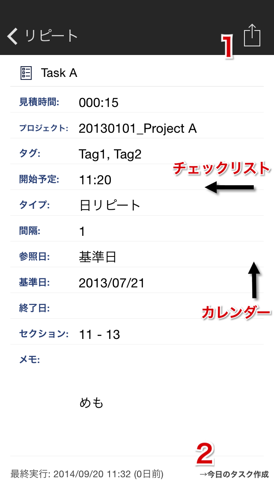
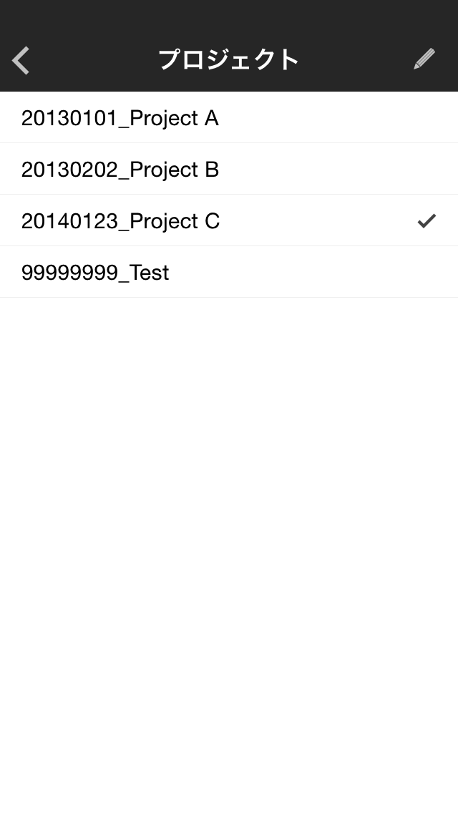
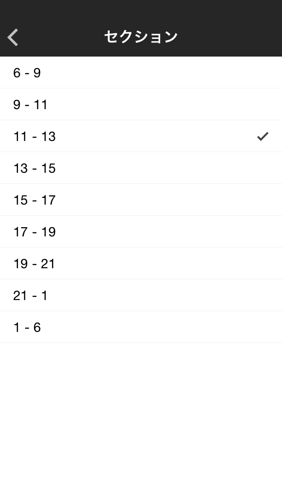

リピート詳細

- アクション実行
- タスクの作成
見積時間編集
- 見積時間クリア
- 一桁削除
- 各数字入力（0〜9）
- 時間-分区切り入力
※分のみで入力しても時間:分の形式に変換されます。
例：90と入力→1:30
- →保存して戻る
プロジェクト編集

- →プロジェクトを設定して戻る：行選択
- 編集モード切替

- プロジェクト追加：New Project行選択
- プロジェクト名編集：行選択
- プロジェクト削除：削除ボタンタップ
タグ編集
- タグ設定：Evernoteタグ一覧から選択、または直接入力
- →保存して戻る
スケジュール時刻編集

- スケジュール時刻クリア
- 一桁削除
- 各数字入力
- 時間-分区切り入力
※2桁入力すると、自動入力される
- →保存して戻る
サイクル数設定
- サイクル数クリア
- 一桁削除
- 各数字入力（0〜9）
- →保存して戻る
リピート設定
Daily
- Reference
- Base Date：
- Completion Date：
- →保存して戻る
Weekly
- Repeat on
- →保存して戻る
Monthly
- Repeat on
- Day of the month：
- Day of the week：
- End of the month：
- →保存して戻る
Yearly
- Repeat on
- Day of the year：
- Day of the month：
- →保存して戻る
Base Date編集・End Date編集
- →保存して戻る
セクション編集

- →セクションを設定して戻る：行選択
メモ編集

- Mail送信：メモ選択→Send
- Evernote送信：メモ選択→Send
- Facebook送信：メモ選択→Share
- Twitter送信：メモ選択→Tweet
- 画像メモ追加（カメラ起動）
- 画像メモ追加（ライブラリ）
- ライブラリから選択：シングルタップ
- 最新写真を追加：ダブルタップ
- テキストメモ追加：テキストエリアタップ
- テキストメモ編集：テキストメモ行選択
- →画像フル表示：画像メモ行選択
- メモ日付編集：行長押し
実行カレンダー
- 今日に移動
- 前月/来月に移動：カレンダー◀▶タップ
- 指定日のログをテーブルに表示：カレンダー日付タップ
- →タスク詳細：テーブル行選択
リピート分析
- Count（総実行回数）
- Sum（実行時間合計）
- Avg（平均実行時間）
- Days（実行日数）
- Duration（実行期間）※初回実行日〜最終実行日
- Interval（平均実行間隔）
- 各Sectionでの実行回数分布
- 各曜日での実行回数分布
→Help Topへ →Taskuma Topへ